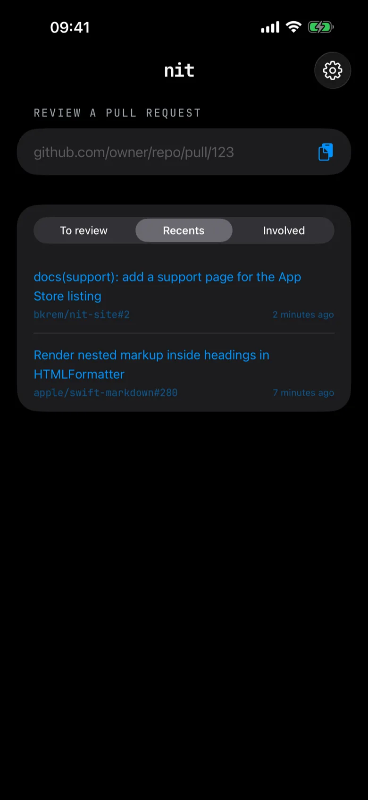
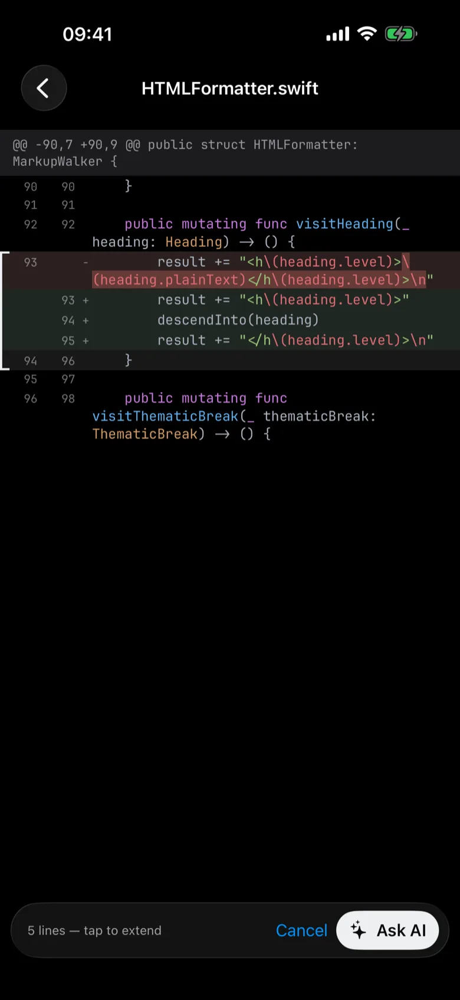
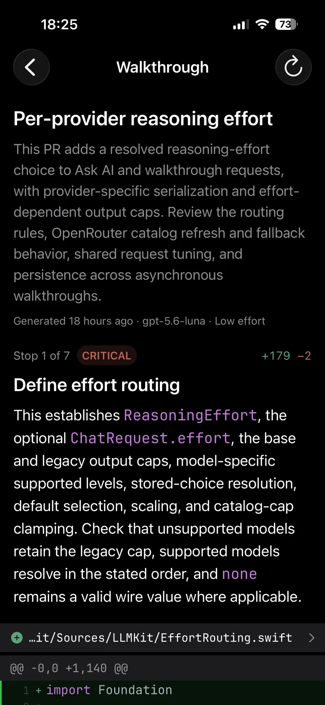
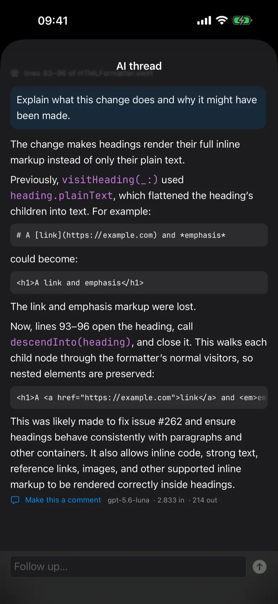
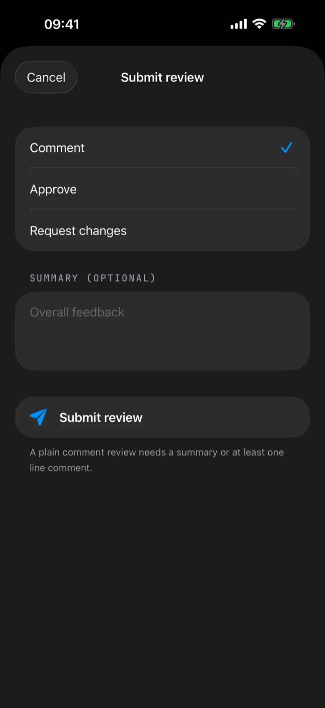
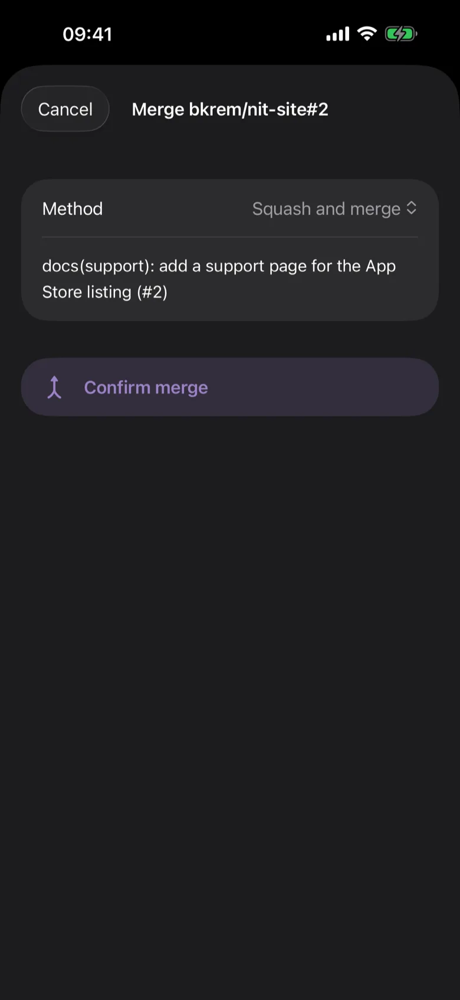

Open a PR from anywhere
Paste a GitHub URL, send a link to Nit through the iOS share sheet, or pick a PR from your inbox of requested reviews. Recently opened PRs stay cached, so they open offline too.

Nit is a native iOS app for reviewing GitHub pull requests: a proper diff, an AI walkthrough, and Ask AI on any hunk. Comment, approve, merge. No laptop.

Why
If you can hand work to coding agents from your phone, you also need to check what they produced from your phone: read the diff, ask the questions, ship it or send it back. That is the part where GitHub on a phone doesn't cut it: a wrapped diff, no review loop, and no AI in reach.
Nit renders the diff the way a desktop tool does and puts your own model one tap away, so the review finishes where the work started.
What it does
Paste a GitHub URL, send a link to Nit through the iOS share sheet, or pick a PR from your inbox of requested reviews. Recently opened PRs stay cached, so they open offline too.

Generate an AI-narrated tour of the PR before you read a line: what changed, why it matters, and which stops deserve a close look, in reading order.

Long-press to select lines or a whole hunk, then ask your own model about exactly that code. Presets like What could break? and Security review are one tap, follow-ups keep the thread, and any answer becomes a review comment.

Then finish the review
Line comments batch into one pending review. Submit it as a comment, an approval, or a request for changes, then merge with a merge commit, squash, or rebase. Nit only shows write actions when your token has write access.


Bring your own AI
Anthropic, OpenAI, and OpenRouter. Pick any model the provider offers, including OpenRouter's batch models for cheaper walkthroughs.
Sign in with the ChatGPT account you already pay for. No API key needed.
Nit sends the selected lines plus surrounding file context, fitted to a token cap, and shows the token counts on every answer.
Private by design
No analytics, crash reporting, or third-party SDKs. There is no Nit server and no account.
Tokens and API keys go into the iOS Keychain the moment you enter them and are never logged.
Requests go from your phone straight to GitHub and to the AI provider you configured. Nothing in between. See the privacy policy.
Nit is a passion project by one developer, in TestFlight. Feedback goes to contact@bkrem.dev.